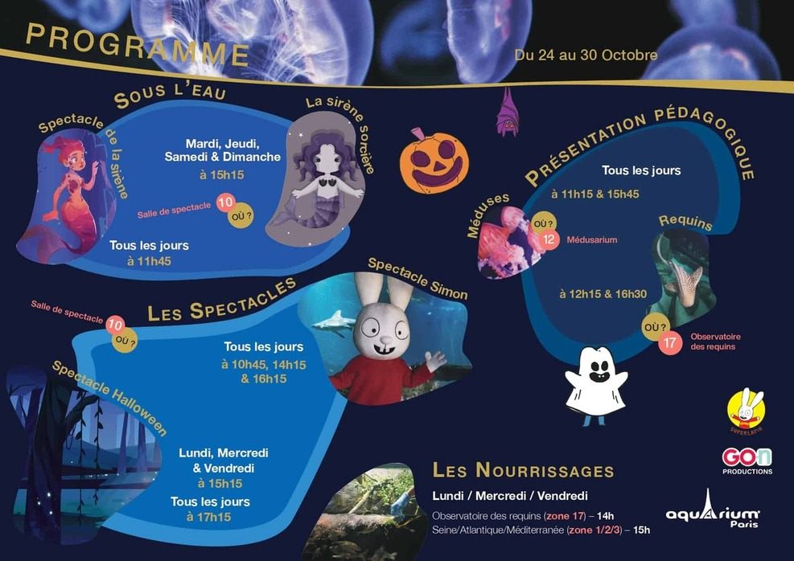

Dans les jardins du Trocadéro, en plein cœur de Paris, l’Aquarium de Paris vous propose un voyage unique pour vous émerveiller et découvrir l’Océan. Partez à la rencontre de 13 000 poissons et invertébrés de toutes les mers de France métropolitaine et outre-mer, dont 38 grands requins, 2500 méduses et 700 colonies de coraux. Découvrez tous les animaux de l’Aquarium de Paris Laissez-vous hypnotiser au Médusarium©, qui accueille la plus grande exposition de méduses en Europe avec 50 espèces présentées par roulement dans 25 bassins. Découvrez le plus grand Médusarium d’Europe

Pour toutes les vacances d’automne, l’Aquarium sera aux couleurs d’Halloween. Nous vous invitons également à venir costumé le 31 octobre. L’exposition Simon est également déclinée sur le thème d’Halloween et un spectacle spécial est mis en scène durant toute la période.